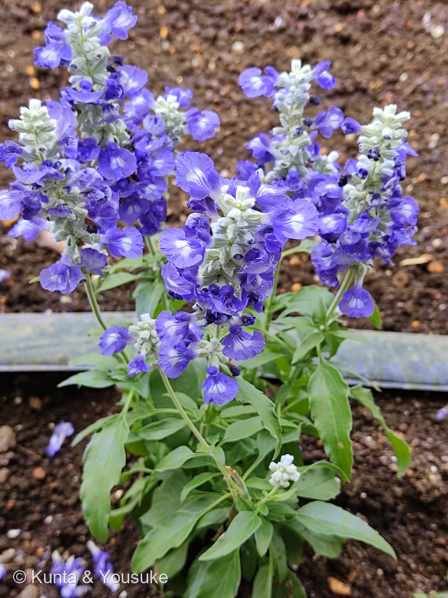
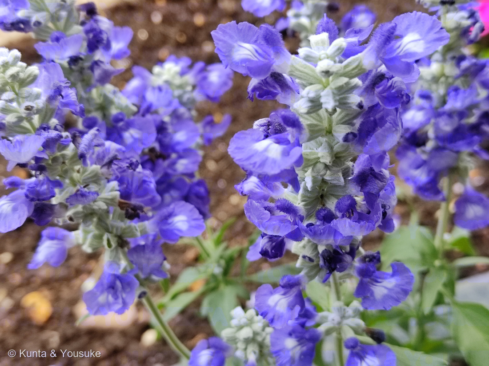

地図を読み込んでいるよ…
🔍 写真も地図も、押しているあいだ拡大して見られるよ（スマホは指を置いてすこし待ってね）。
🌍 の地図＝この子がもともと自生している場所を緑に。北アメリカ。三河の植物観察はアメリカ合衆国（ニューメキシコ州・テキサス州）とし、別の資料はアメリカ南東部からメキシコ北東部まで、としている。原産地では多年草だが、日本では耐寒性がないため半耐寒性の一年草として扱われる。
⭐北アメリカの子だよ。⚠出典で範囲の書きぶりが違う——三河の植物観察は「USA（ニューメキシコ州、テキサス州）原産」とし、別の資料は「アメリカ南東部〜メキシコ北東部」としている。⭐だからアメリカ合衆国とメキシコの両方を塗った。⚠地図は国までしか塗れないので、実際よりずっと広く見えている——三河のとおりならテキサス州とニューメキシコ州のあたりだけだよ。⭐そこは乾いた土地。⚠日本のこの子は花壇に植えられたもので、野生化しているわけではない——原産地では多年草だけれど、日本の冬は越せないので一年草あつかいなんだ（046 サルビアとまったく同じ事情だね）。
⚠ 地図は国（日本と中国だけ県・省）までしか塗れないから、ほんとうの分布より広く見えていることがあるよ。地図はだいたいの場所。正確なところは、上の文を見てね。
ブルーサルビア（ケショウサルビア）
Salvia farinacea Benth.
別名 · ケショウサルビア（化粧サルビア）／サルビア・ファリナセア ／ 英 · mealy sage, mealycup sage, blue sage ／ 見どころ · ⭐⭐学名も和名も英名も、そろって「粉をふいた萼」を指している
シソ科 · Lamiaceae（アキギリ属 Salvia・シソ目 Lamiales）── この図鑑で2人目のサルビア属。046 サルビア（赤い S. splendens）の親戚
燻太さんの言葉「シソ科なのははっきりわかるね。ハマゴウにも似ているけど、花の数はずっと多いよ。」……⭐その見くらべ、じつは071 ハマゴウの「科の引っ越し」の裏づけにもなっているよ（下の節に）。
名前と学名の由来 ── 3つの名前が、そろって「粉」を指している
- 属名 Salvia＝ラテン語の salvare（救う・癒やす） から。もとは薬草セージ（Salvia officinalis）につけられた名前だよ。⭐046 サルビアで書いたのと、同じ話。
- ⭐⭐種小名 farinacea（ファリナセア）＝ラテン語で「粉質の・粉状の」。茎や萼に、粉のような毛があることに由来する。
- ⭐⭐和名「ケショウサルビア（化粧サルビア）」＝⭐萼が粉白色を帯びるから。──おしろいをはたいたように見えたんだね。
- ⭐⭐英名は mealy sage / mealycup sage（mealy＝粉っぽい）。⭐萼片がフェルト状の毛におおわれて、粉白色に見えるため。
- ⭐⭐⭐つまり、ラテン語の学名も、日本語の和名も、英語の名前も、ぜんぶ同じ一点を言っている——⭐「この花は、粉をふいている」。⭐別々の国の人が、同じところに目を止めたんだ。
- ⭐そして、その「粉」は写真②にちゃんと写っている。青紫の花のあいだで、白くふわふわして見えるのが萼だよ。
この植物のこと ── 2人目のサルビア
- シソ科アキギリ属。⭐この図鑑で2人目のサルビア属（1人目は046 サルビア＝赤い S. splendens）。シソ科としては、にぎやかな一族の10人目くらいだよ。
- 草丈は30〜90cm（ふつう50〜70cm）〔三河〕。茎は直立、または不規則に広がる。
- 葉は対生で柄があり、長さ8cm以下・幅2cm以下、楕円形〜狭披針形、灰緑色〔三河〕。ふちの歯は、あるものと無いものがある。
- ⭐花序は長さ7.5〜23cmの輪散花序で、花が10〜16個ほどつく〔三河〕。⭐シソ科らしく、花が輪になって段々に積み上がる。
- 花冠は2唇形、暗青色または白色、長さ1.6〜1.8cm。上唇は小さく、下唇は大きく5裂〔三河〕。萼は粉白色（ときに紫色）で、フェルト状の毛におおわれる。
- 花期は4〜10月〔三河〕（東京では11月ごろまで咲いていることもある）。⭐半年ちかく咲きつづけるから、花壇の定番なんだね。
- ⚠原産地では多年草だけれど、日本では寒さに耐えられないので、一年草として扱われる。⭐046 サルビア（ブラジル原産）と、まったく同じ事情だよ。
- 品種がたくさんある＝'Alba'、'Blue Bedder'、'Victoria'、'Strata'、'Seascape'、'Saga Blue' ほか〔三河〕。
同定について ── 「粉」を見れば、それでいい
- ⭐⭐決め手は、萼の白い毛。写真②で、花のあいだの白くふわふわした部分がそれ。⭐種小名も和名も英名も、この一点から来ているのだから、ここが見えれば同定はほぼ終わりなんだ。
- ⭐そのほかの合う点＝青紫の2唇形花／輪散花序が段々に積み上がる（シソ科）／葉は対生で細く、灰緑色／花冠の下唇に白い模様／花壇の一年草として植えられている。
- ⚠品種は決めない。萼が白い（紫ではない）ので 'Strata' のような白萼系が近いかもしれないけれど、⭐品種は「そう売られていた」ことが根拠になるものだから、写真だけでは決めないでおくね。
- ⚠⚠出典の書き方について、ひとつ：三河の植物観察のこのページは、属を「アオギリ属」と書いているけれど、これは誤植だと思う（アオギリはアオイ科の別の木）。⭐正しくはアキギリ属 Salvia で、三河の他のページ（アキノタムラソウなど）ではそう書かれているよ。
⭐⭐ 燻太さんの見立て ── 「ハマゴウにも似ているけど、花の数はずっと多い」
⭐シソ科なのは、はっきり分かる——燻太さんのこの一行は、そのとおりだよ。四角い茎・対生の葉・唇形花・輪になって段々積み上がる花序、ぜんぶそろっている。
⭐そして071 ハマゴウと見くらべたのが、すごくいい着眼なんだ。
- ⭐たしかに同じシソ科。でも⭐属がちがう——ハマゴウはハマゴウ属 Vitex、この子はアキギリ属 Salvia。
- ⭐⭐そして「花の数」のちがいには、ちゃんと理由がある。この子は⭐輪散花序が縦に積み上がる（三河＝長さ7.5〜23cmの花序に10〜16個）。⭐その花穂が、一株から何本も立ち上がる。──だから数が多く見えるんだ。
- ⭐⭐⭐さらに面白いのは、071のいちばんの見どころが「科の引っ越し」だったこと。ハマゴウは長くクマツヅラ科とされていたのに、1990年代のDNA解析でシソ科へ移された。──⭐⭐燻太さんが「シソ科なのははっきり分かる」と言いながら、そのハマゴウを引き合いに出したこと自体が、あの引っ越しが正しかったことの、小さな裏づけになっているね。⭐目で見て似ていると思ったものが、DNAでも近かった、ということだから。
⭐⭐⭐ 046の続き ── こちらは、レバーを使っている
046 サルビアで、ぼくらはサルビア属のいちばん有名な仕掛けを書いた。──⭐シーソー式の雄しべ（staminal lever mechanism）。虫が下唇に乗って奥へ潜ると、不稔の葯でできたレバーを押す。てこの原理で、上の稔性の葯が回り降りて、虫の背中に花粉を押しつける。約900〜1000種の適応放散の鍵とされる仕掛けだよ。
⚠そして046の主役は、「その仕掛けを手放した子」だった。赤い S. splendens は鳥（ハチドリ）に乗りかえて、レバーを使わなくなった。⭐でも日本にハチドリはいない。だからあの赤は、来ない客への看板——そう書いたよね。
⭐⭐じゃあ、この青い子はどうなんだろう。──ここが、今日いちばん知りたかったところ。
- ⭐Salvia farinacea は、ハチが来る花（bee-pollinated）として扱われている。
- ⭐⭐しかもこの子には、レバーの「追加のスイッチ」があると報告されている。Kriebel, Drew, Claßen-Bockhoff & Sytsma の研究（Evolution of anther connective teeth in sages (Salvia, Lamiaceae) under bee and hummingbird pollination, Flora, 2022）は、⭐葯をつなぐ部分にある「歯（connective teeth）」に注目していて、この S. farinacea を使って、ハチの顔がその歯に触れること、そして歯を押すと、下のレバー腕を押さなくてもレバーが動くことを示した、とされているよ。
- ⚠⚠正直に書くね。この論文は、ぼくの手元では本文を開けなかった（出版社のページが読めなかった）。⭐だから「〜と報告されている」と書いて、断定はしないでおく。
- ⭐⭐⭐でも、もしそうなら、046との対比はとてもきれいだ。──赤い splendens はレバーを手放して鳥へ行き、青い farinacea はレバーを使いつづけて、さらに引き金を増やした。⭐同じ属、同じ花壇、ちがう戦略。
- ⭐⭐そして、いちばん大事なちがい＝⚠日本にハチドリはいないけれど、ハチはいる。──⭐046の赤が「来ない客への看板」だったのに対して、この青には、ちゃんとお客さんが来る。
🔬だから、宿題ができた。──⭐細い棒（つまようじの先など）で、下唇の奥をそっと押してみて。⭐うまくいけば、上から葯が降りてきて、棒の背中に花粉がつくはず。⭐教科書の仕掛けを、自分の手で動かせるんだよ。⚠ただし、よそのお花だから、ちぎらないでそっとね（078 モクビャッコウで決めた約束）。
参考：三河の植物観察「ブルーサルビア」（和名ブルーサルビア・ケショウサルビア／英名 mealy blue sage, mealycup sage, mealy sage, blue sage／USA（ニューメキシコ州、テキサス州）原産／草丈30〜90cm・普通50〜70cm／多年草、半耐寒性の1年草として栽培／葉は対生・有柄・長さ8cm以下、幅2cm以下、楕円形〜狭披針形、灰緑色／花序は長さ7.5〜23cmの輪散花序、花が10〜16個程度／萼は粉白色（ときに紫色）、フェルト状の毛で覆われ／花冠は2唇形、暗青色または白色、長さ1.6〜1.8cm／花期4〜10月／品種 'Alba' 'Blue Bedder' 'Victoria' 'Strata' ほか。⚠属名を「アオギリ属」と書いているのは誤植だと思う）。
サルビア属のレバー＝Kriebel, Drew, Claßen-Bockhoff & Sytsma, Evolution of anther connective teeth in sages (Salvia, Lamiaceae) under bee and hummingbird pollination（Flora, 2022）（⚠本文は開けなかった。検索で読めた要旨の範囲＝ハチが S. farinacea の花を訪れるとき、顔が葯の「歯」に触れること／歯を押すと、下のレバー腕を押さなくてもレバーが下向きに動くこと）／046 サルビアの出典（Wester & Claßen-Bockhoff 2007, Annals of Botany）もあわせて見てね